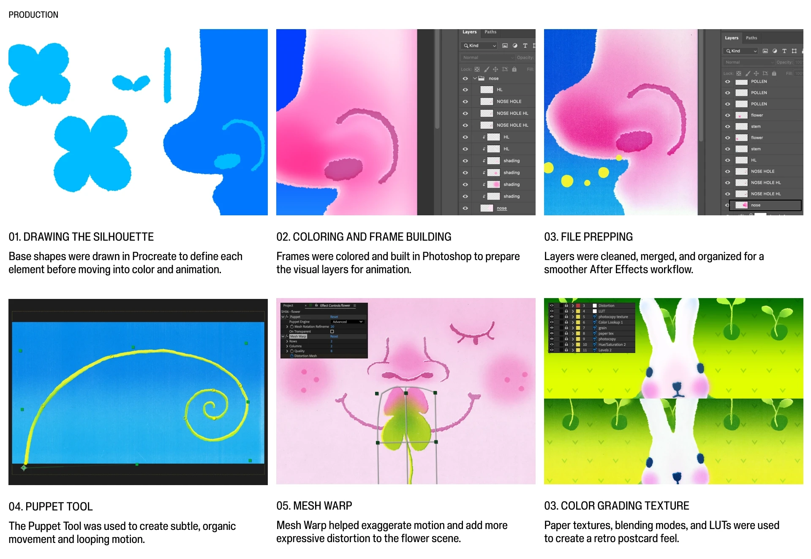

Overbloom is a short animated piece about the contrast between the beauty of spring and the overwhelming feeling of seasonal allergies. Inspired by my personal experience of spring in Savannah, Georgia during peak pollen season, the film turns sneezing, itchiness, and sensory overload into a playful visual journey filled with blooming flowers, soft textures, and nostalgic handmade details.
The piece combines hand-drawn frames, paper-like textures, and seamless transitions to capture the strange beauty of spring, when everything feels colorful, charming, and a little too much.
Tools: Procreate, adobe photoshop, adobe after effectsGuidance: Professor minho shin


